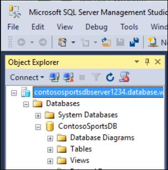

Modern cloud apps
Hands-on lab unguided
March 2018
Information in this document, including URL and other Internet Web site references, is subject to change without notice. Unless otherwise noted, the example companies, organizations, products, domain names, e-mail addresses, logos, people, places, and events depicted herein are fictitious, and no association with any real company, organization, product, domain name, e-mail address, logo, person, place or event is intended or should be inferred. Complying with all applicable copyright laws is the responsibility of the user. Without limiting the rights under copyright, no part of this document may be reproduced, stored in or introduced into a retrieval system, or transmitted in any form or by any means (electronic, mechanical, photocopying, recording, or otherwise), or for any purpose, without the express written permission of Microsoft Corporation.
Microsoft may have patents, patent applications, trademarks, copyrights, or other intellectual property rights covering subject matter in this document. Except as expressly provided in any written license agreement from Microsoft, the furnishing of this document does not give you any license to these patents, trademarks, copyrights, or other intellectual property.
The names of manufacturers, products, or URLs are provided for informational purposes only and Microsoft makes no representations and warranties, either expressed, implied, or statutory, regarding these manufacturers or the use of the products with any Microsoft technologies. The inclusion of a manufacturer or product does not imply endorsement of Microsoft of the manufacturer or product. Links may be provided to third party sites. Such sites are not under the control of Microsoft and Microsoft is not responsible for the contents of any linked site or any link contained in a linked site, or any changes or updates to such sites. Microsoft is not responsible for webcasting or any other form of transmission received from any linked site. Microsoft is providing these links to you only as a convenience, and the inclusion of any link does not imply endorsement of Microsoft of the site or the products contained therein. © 2018 Microsoft Corporation. All rights reserved.
Microsoft and the trademarks listed at https://www.microsoft.com/en-us/legal/intellectualproperty/Trademarks/Usage/General.aspx are trademarks of the Microsoft group of companies. All other trademarks are property of their respective owners.
Contents
In this Microsoft Cloud Workshop, attendees will implement an end-to-end solution for e-commerce that is based on Azure App Services, Azure Active Directory, and Visual Studio Team Services. Attendees will ensure that appropriate security measures are put into place for both on-premises and public access scenarios.
Attendees will be better able to deploy and configure Azure Web Apps and associated services. In addition,
Configure Web Apps for authentication with Azure AD
Instrument and load-test the application with App Insights
Automate backend services using Azure Functions and Logic Apps
The Modern cloud apps Hackathon is a hands-on exercise that will challenge you to implement an end-to-end scenario using a supplied sample that is based on Microsoft Azure App Services and related services. The scenario will include implementing compute, storage, security, and scale using various components of Microsoft Azure. The Hackathon can be implemented on your own, but it is highly recommended to pair up with other members at the Hackathon to model a real-world experience much closer and to allow each member to share their expertise for the overall solution.
Microsoft Azure subscription
Local machine or a virtual machine configured with:

Duration: 60 minutes
Contoso has asked you to create a proof of concept deployment in Microsoft Azure by deploying the web, database, and API applications for the solution as well as validating that the core functionality of the solution works. Ensure all resources use the same resource group previously created for the App Service Environment.
In this exercise, you will provision a website via the Azure Web App + SQL template using the Microsoft Azure Portal. You will then edit the necessary configuration files in the starter project and deploy the e-commerce website.
Tasks to complete
Create the resources in Microsoft Azure needed to deploy the e-commerce web app, database, and storage.
Specify the configuration settings to connect to the resources in the e-commerce Web App’s Application Settings in Azure.
Deploy the e-commerce application to Microsoft Azure.
Exit criteria
The web application should display locally. (Right-click the project and click view in browser.)
The web application should display in Microsoft Azure by navigating to its [web app name].azurewebsites.net URL.
Click the STORE link to ensure that connectivity to the database is successful.
In this exercise, the attendee will provision a secondary SQL Database and configure Geo-Replication using the Microsoft Azure Portal.
Tasks to complete
Configure Readable Geo-Replication for the SQL Database created in Task 1 by setting up a Secondary database in the other Azure Region in the pair.
Force Failover to the Secondary database
Specify the connection string for the Secondary database in the e-commerce Web App’s Application Settings in Azure, and test the Web App
Revert the Failover test so the original database is Primary
Manually forcing the Failover to the Secondary database is optional. The process of performing the Failover, testing it, then reverting back to the Primary database can take up to 30 minutes to complete. If you have time, it is recommended that you complete these steps.
Exit criteria
The web application should display locally when connected to the Secondary database in the Failover test (Right-click the project and click view in browser.)
Click the STORE link to ensure that connectivity to the Secondary database is successful.
The web application should display locally when connected to the Primary database after the Failover test has been reverted.
Click the STORE link to ensure that connectivity to the Primary database is successful.
In this exercise, you will provision a website via the Azure Web App template using the Microsoft Azure Portal. You will then edit the necessary configuration files in the Starter Project and deploy the call center admin website.
Tasks to complete
Create the resources in Microsoft Azure needs to deploy the call center admin website.
Specify the configuration settings to connect to the resources in the call center admin Web App’s Application Settings in Azure.
Deploy the call center admin website application to Microsoft Azure.
Exit criteria
The web application should display locally. (Right-click the project and click view in browser.)
The web application should display in Microsoft Azure by navigating to its [web app name].azurewebsites.net URL.

In this exercise, the attendee will provision an Azure API app template using the Microsoft Azure Portal. The attendee will then deploy the payment gateway API to the API app.
Tasks to complete
Exit criteria
In this exercise, the attendee will provision an Azure API app template using the Microsoft Azure Portal. The attendee will then deploy the offers Web API.
Tasks to complete
Create the resources in Microsoft Azure and deploy the offers API application.
Specify the configuration settings to connect to the created resources in the Web Apps Application Settings in Azure.
Exit criteria
In this exercise, you will deploy the e-commerce web app and ensure all of the configuration to connect to the other services is correct.
Tasks to complete
Update the e-commerce application to reference the new API applications.
Deploy the updated e-commerce site to the Azure website.
Verify the configuration by placing a test order on the e-commerce site and ensure the order appears on the admin site.
Exit criteria
The web application should display locally.
The web application should display in Microsoft Azure by navigating to its [web app name].azurewebsites.net URL.
The home page should render a list of products with images underneath the Today’s Offers heading.
The e-commerce application should render the products catalog without errors.
A test order should be rendered in the call center admin application after being submitted through the e-commerce site.
Duration: 75 Minutes
The Contoso call center admin application will only be accessible by users of the Contoso Active Directory environment. You have been asked to create a new Azure AD Tenant and secure the application so only users from the tenant can log on.
Note: Tasks 1, 2, and 4 are optional and require global admin permissions on the Azure AD Tenant. Task 3 is also optional but does require the permission to create an app in the Azure AD tenant.
Tasks to complete
Exit criteria
Tasks to complete
Exit criteria
Tasks to complete
Exit criteria
Tasks to complete
Exit criteria
Tasks to complete
Exit criteria
Duration: 75 minutes
In this exercise, you will configure an Azure AD Business to Consumer (B2C) instance to enable authentication and policies for sign-in, sign-out and profile policies for the Contoso E-Commerce site.
Note: This portion of the hands-on lab is written in a lab format due to the complexity of the configuration.
Log in to the Azure portal by using your existing Azure subscription or by starting a free trial. At the left bottom of the screen, click New > Azure Active Directory B2C.


Enter for the name, ContosoB2C and a unique domain name and region. Click Create a new Azure AD B2C Tenant, and it will take a minute to complete. Click the link to manage your new B2C Directory.

Click on the orange No Subscription message for instructions on how to link to an active subscription.

Note: Essentially, you will need to switch back to your previous Azure AD tenant, and then launch the Azure AD B2C creation wizard again.
Click on Link an existing Azure AD B2C Tenant to my Azure subscription, and select the Tenant you just created in the dropdown list and existing resource group. Press Create. 
Open the new Azure AD B2C tenant.
Click on All Settings > Applications > +Add.

Specify the following configuration options for the Web App:
Name: Contoso B2C Application
Reply URL: https://[your web url].azurewebsites.net <- this should be the HTTPS URL to the Contoso E-Commerce Site.
Include Web App / web API: Yes

Click Create.
Click the application you just created, and copy down the globally unique Application ID you will use later in your code.
Open your Azure AD B2C Tenant in the Azure management portal.
To enable sign-up on your application, you will need to create a sign-up policy. This policy describes the experiences consumers will go through during sign-up and the contents of tokens the application will receive on successful sign-ups. Click Sign-up or sign-in policies as well as +Add at the top of the blade.

The Name determines the sign-up policy name used by your application. For example, enter "SiUp."
Click Identity providers, and select "Email signup." Optionally, you can also select social identity providers (if previously configured for the tenant). Click OK.

Click Sign-up attributes. Here, you choose attributes you want to collect from the consumer during sign-up. For example, select "Country/Region," "Display Name" and "Postal Code." Click OK.

Click Application claims. Here, you choose claims you want returned in the tokens sent back to your application after a successful sign-up experience. For example, select "Display Name," "Identity Provider," "Postal Code," "User is new" and "User's Object ID."

Click Create. Observe the policy just created appears as "B2C_1_SiUp" (the B2C_1_ fragment is automatically added) in the Sign-up policies blade.
Open the policy by clicking "B2C_1_SiUp."
Select "Contoso B2C app" in the Applications drop-down.
Click Run now. A new browser tab opens, and you can run through the consumer experience of signing up for your application.
To enable sign-in on your application, you will need to create a sign-in policy. This policy describes the experiences consumers will go through during sign-in and the contents of tokens the application will receive on successful sign-ins.
Click Sign-in policies.
 s
s
Click +Add at the top of the blade.
The Name determines the sign-in policy name used by your application. For example, enter "SiIn" <the 3rd letter is an upper case i>.
Click Identity providers and select "Local Account SignIn." Optionally, you can also select social identity providers, if already configured. Click OK.

Click Application claims. Here you choose claims that you want returned in the tokens sent back to your application after a successful sign-in experience. For example, select "Display Name," "Identity Provider," "Postal Code," and "User's Object ID." Click OK.

Click Create. Observe the policy just created appears as "B2C_1_SiIn" (the B2C_1_ fragment is automatically added) in the Sign-in policies blade.
Open the policy by clicking "B2C_1_SiIn."
Select "Contoso B2C app" in the Applications drop-down.
Click Run now. A new browser tab opens, and you can run through the consumer experience of signing into your application.
To enable profile editing on your application, you will need to create a profile editing policy. This policy describes the experiences that consumers will go through during profile editing and the contents of tokens that the application will receive on successful completion.
Click Profile editing policies.

Click +Add at the top of the blade.
The Name determines the profile editing policy name used by your application. For example, enter "SiPe."
Click Identity providers, and select "Local Account SignIn." Optionally, you can also select social identity providers, if already configured. Click OK.

Click Profile attributes. Here, you choose attributes the consumer can view and edit. For example, select "Country/Region," "Display Name," “Job Title," "Postal Code,"”State/Province," and “Street Address.” Click OK.

Click Application claims. Here, you choose claims you want returned in the tokens sent back to your application after a successful profile editing experience. For example, select "Display Name" and "Postal Code."
Click Create. Observe the policy just created appears as "B2C_1_SiPe" (the B2C_1_ fragment is automatically added) in the Profile editing policies blade.
Open the policy by clicking "B2C_1_SiPe."
Select "Contoso B2C app" in the Applications drop-down.
Click Run now. A new browser tab opens, and you can run through the profile editing consumer experience in your application.
Within Visual Studio, click on View -> Other Windows -> Package Manager Console. Execute the following commands to install these the required NuGet Packages.
Install-Package Microsoft.Owin.Security.OpenIdConnect -Version 3.0.1
Install-Package Microsoft.Owin.Security.Cookies -Version 3.0.1
Install-Package Microsoft.Owin.Host.SystemWeb -Version 3.0.1
Install-Package Microsoft.IdentityModel.Protocol.Extensions -Version 1.0.4.403061554Next, using the Azure Management Portal, open the Contoso E-Commerce Site, and click on App Settings.
Add the following settings:
ida:Tenant - [your Azure AD B2C name].onmicrosoft.com
ida:ClientId – [the client/app ID from your app]
ida:RedirectUri - https://[your web url].azurewebsites.net
ida:SignupPolicyId – B2C_1_SiUp
ida:SignInPolicyId – B2C_1_SiIn <the 3rd letter is an upper case i>
ida:UserProfilePolicyId – B2C_1_SiPe
ida:AadInstance - https://login.microsoftonline.com/{0}/v2.0/.well-known/openid-configuration?p={1}

Click Save when you are complete.
Within Visual Studio, right click on the Contoso.Apps.SportsLeague.Web project, and click Add -> New Item.

In the Search Installed Templates search box search for OWIN. Click the OWIN Startup class, change the name to Startup.cs, and then click Add.
In the new class, insert the word partial in between public and class to make this a partial class.

Add the following code between the brackets of the Configuration method.
ConfigureAuth(app);
// Startup.cs
public partial class Startup
{
public void Configuration(IAppBuilder app)
{
ConfigureAuth(app);
}
}Note: The OWIN middleware will invoke the Configuration(...) method when your app starts.
Right click on the App_Start folder, and click Add -> Class.
Select Visual C# and Class, and name the new file Startup.Auth.cs.
Replace the entire contents of Startup.Auth.cs with the following code:
// App\_Start\\Startup.Auth.cs
using System;
using Owin;
using Microsoft.Owin.Security;
using Microsoft.Owin.Security.Cookies;
using Microsoft.Owin.Security.OpenIdConnect;
using System.Threading.Tasks;
using Microsoft.Owin.Security.Notifications;
using Microsoft.IdentityModel.Protocols;
using System.Configuration;
using System.IdentityModel.Tokens;
using System.Web.Helpers;
using System.IdentityModel.Claims;
namespace Contoso.Apps.SportsLeague.Web
{
public partial class Startup
{
// App config settings
private static string clientId = ConfigurationManager.AppSettings\[\"ida:ClientId\"\];
private static string aadInstance = ConfigurationManager.AppSettings\[\"ida:AadInstance\"\];
private static string tenant = ConfigurationManager.AppSettings\[\"ida:Tenant\"\];
private static string redirectUri = ConfigurationManager.AppSettings\[\"ida:RedirectUri\"\];
// B2C policy identifiers
public static string SignUpPolicyId = ConfigurationManager.AppSettings\[\"ida:SignUpPolicyId\"\];
public static string SignInPolicyId = ConfigurationManager.AppSettings\[\"ida:SignInPolicyId\"\];
public static string ProfilePolicyId = ConfigurationManager.AppSettings\[\"ida:UserProfilePolicyId\"\];
public void ConfigureAuth(IAppBuilder app)
{
app.SetDefaultSignInAsAuthenticationType(CookieAuthenticationDefaults.AuthenticationType);
app.UseCookieAuthentication(new CookieAuthenticationOptions());
// Configure OpenID Connect middleware for each policy
app.UseOpenIdConnectAuthentication(CreateOptionsFromPolicy(SignUpPolicyId));
app.UseOpenIdConnectAuthentication(CreateOptionsFromPolicy(ProfilePolicyId));
app.UseOpenIdConnectAuthentication(CreateOptionsFromPolicy(SignInPolicyId));
AntiForgeryConfig.UniqueClaimTypeIdentifier = ClaimTypes.NameIdentifier;
}
// Used for avoiding yellow-screen-of-death
private Task AuthenticationFailed(AuthenticationFailedNotification\<OpenIdConnectMessage, OpenIdConnectAuthenticationOptions\> notification)
{
notification.HandleResponse();
if (notification.Exception.Message == \"access\_denied\")
{
notification.Response.Redirect(\"/\");
}
else
{
notification.Response.Redirect(\"/Home/Error?message=\" + notification.Exception.Message);
}
return Task.FromResult(0);
}
private OpenIdConnectAuthenticationOptions CreateOptionsFromPolicy(string policy)
{
return new OpenIdConnectAuthenticationOptions
{
// For each policy, give OWIN the policy-specific metadata address, and
// set the authentication type to the id of the policy
MetadataAddress = String.Format(aadInstance, tenant, policy),
AuthenticationType = policy,
// These are standard OpenID Connect parameters, with values pulled from web.config
ClientId = clientId,
RedirectUri = redirectUri,
PostLogoutRedirectUri = redirectUri,
Notifications = new OpenIdConnectAuthenticationNotifications
{
AuthenticationFailed = AuthenticationFailed,
},
Scope = \"openid\",
ResponseType = \"id\_token\",
// This piece is optional - it is used for displaying the user\'s name in the navigation bar.
TokenValidationParameters = new TokenValidationParameters
{
NameClaimType = \"name\",
},
};
}
}
}Note: The parameters you provide in OpenIdConnectAuthenticationOptions serve as coordinates for your app to communicate with Azure AD. You also need to set up cookie authentication. The OpenID Connect middleware uses cookies to maintain user sessions, among other things.
Your app is now properly configured to communicate with Azure AD B2C by using the OpenID Connect authentication protocol. OWIN has taken care of all of the details of crafting authentication messages, validating tokens from Azure AD, and maintaining user session. All that remains is to initiate each user's flow.
Right click on the Controllers folder, and click Add -> Controller. 
Select MVC 5 Controller – Empty, and click Add. Replace Default with Account for the controller name.
Add the following using statement to the top of the controller:
using Microsoft.Owin.Security;Replace the default controller method Index

With the following code:
// Controllers\\AccountController.cs
public void SignIn()
{
if (!Request.IsAuthenticated)
{
// To execute a policy, you simply need to trigger an OWIN challenge.
// You can indicate which policy to use by specifying the policy id as the AuthenticationType
HttpContext.GetOwinContext().Authentication.Challenge(
new AuthenticationProperties () { RedirectUri = \"/\" }, Startup.SignInPolicyId);
}
}
public void SignUp()
{
if (!Request.IsAuthenticated)
{
HttpContext.GetOwinContext().Authentication.Challenge(
new AuthenticationProperties() { RedirectUri = \"/\" }, Startup.SignUpPolicyId);
}
}
public void Profile()
{
if (Request.IsAuthenticated)
{
HttpContext.GetOwinContext().Authentication.Challenge(
new AuthenticationProperties() { RedirectUri = \"/\" }, Startup.ProfilePolicyId);
}
}You can also use OWIN to sign out the user from the app. Add the following method to the account controller (Controllers\AccountController.cs):
C\# Copy// Controllers\\AccountController.cs
public void SignOut()
{
// To sign out the user, you should issue an OpenIDConnect sign out request
if (Request.IsAuthenticated)
{
IEnumerable\<AuthenticationDescription\> authTypes = HttpContext.GetOwinContext().Authentication.GetAuthenticationTypes();
HttpContext.GetOwinContext().Authentication.SignOut(authTypes.Select(t =\> t.AuthenticationType).ToArray());
Request.GetOwinContext().Authentication.GetAuthenticationTypes();
}
}When you authenticate users by using OpenID Connect, Azure AD returns an ID token to the app that contains claims. These are assertions about the user. You can use claims to personalize your app. You can access user claims in your controllers via the ClaimsPrincipal.Current security principal object.
Open the Controllers\HomeController.cs file and add the following using statements at the end of the other using statements.
using System.Linq;
using System.Security.Claims;Open the Controllers\HomeController.cs file and add the following method:
\[Authorize\]
public ActionResult Claims()
{
Claim displayName = ClaimsPrincipal.Current.FindFirst(ClaimsPrincipal.Current.Identities.First().NameClaimType);
ViewBag.DisplayName = displayName != null ? displayName.Value : string.Empty;
return View();
}You can access any claim that your application receives in the same way. A list of all the claims the app receives is available for you on the Claims page. Right click on Views -> Home, click Add -> MVC 5 View Page (Razor) and name it Claims. 
Open the Claims.cshtml file and replace the code with the following:
\@using System.Security.Claims
@{
ViewBag.Title = \"Claims\";
}
\<h2\>\@ViewBag.Title\</h2\>
\<h4\>Claims Present in the Claims Identity: \@ViewBag.DisplayName\</h4\>
\<table class=\"table-hover claim-table\"\>
\<tr\>
\<th class=\"claim-type claim-data claim-head\"\>Claim Type\</th\>
\<th class=\"claim-data claim-head\"\>Claim Value\</th\>
\</tr\>
\@foreach (Claim claim in ClaimsPrincipal.Current.Claims)
{
\<tr\>
\<td class=\"claim-type claim-data\"\>\@claim.Type\</td\>
\<td class=\"claim-data\"\>\@claim.Value\</td\>
\</tr\>
}
\</table\>Right click on the Views -> Shared folder, click Add, and add a new MVC 5 Partial Page (Razor). Specify _LoginPartial for the name.

Add the following code to the razor partial view to provide a sign-in and sign-out link as well as a link to edit the user’s profile.
\@if (Request.IsAuthenticated)
{
\<text\>
\<ul class=\"nav navbar-nav navbar-right\"\>
\<li\>
\<a id=\"profile-link\"\>\@User.Identity.Name\</a\>
\<div id=\"profile-options\" class=\"nav navbar-nav navbar-right\"\>
\<ul class=\"profile-links\"\>
\<li class=\"profile-link\"\>
\@Html.ActionLink(\"Edit Profile\", \"Profile\", \"Account\")
\</li\>
\</ul\>
\</div\>
\</li\>
\<li\>
\@Html.ActionLink(\"Sign out\", \"SignOut\", \"Account\")
\</li\>
\</ul\>
\</text\>
}
else
{
\<ul class=\"nav navbar-nav navbar-right\"\>
\<li\>\@Html.ActionLink(\"Sign up\", \"SignUp\", \"Account\", routeValues: null, htmlAttributes: new { id = \"signUpLink\" })\</li\>
\<li\>\@Html.ActionLink(\"Sign in\", \"SignIn\", \"Account\", routeValues: null, htmlAttributes: new { id = \"loginLink\" })\</li\>
\</ul\>
}Open Views\Shared\_Layout.cshtml in Visual Studio. Locate the header-tap div. and add the two lines highlighted.
\<div class=\"header-top\"\>
\<div class=\"container\"\>
\<div class=\"row\"\>
\<div class=\"header-top-left\"\>
\<a href=\"\#\"\>\<i class=\"fa fa-twitter\"\>\</i\>\</a\>
\<a href=\"\#\"\>\<i class=\"fa fa-facebook\"\>\</i\>\</a\>
\<a href=\"\#\"\>\<i class=\"fa fa-linkedin\"\>\</i\>\</a\>
\<a href=\"\#\"\>\<i class=\"fa fa-instagram\"\>\</i\>\</a\>
\</div\>
\<div class=\"header-top-right\"\>
\<a href=\"\#\" class=\"top-wrap\"\>\<span class=\"icon-phone\"\>Call today: \</span\> (555) 555-8000\</a\>
\@Html.ActionLink(\"Claims\", \"Claims\", \"Home\")
\</div\>
\@Html.Partial(\"\_LoginPartial\")
\</div\>
\</div\>
\</div\>Launch a browser outside of Visual Studio for testing if the page loads in Visual Studio.
Test out Sign up. Next, test Sign out.
When you click on Claims and are not signed in, it will bring you to the sign-in page and then display the claim information. Sign in, and test Edit Profile.

Claims information page
To validate the scalability of the application and to configure telemetry, you have been asked to configure Microsoft Azure Application Insights and perform a web load test using Visual Studio Online.
Configure a method to capture telemetry information for the application for the server and client side.
Complete the implementation of the TrackException and TrackEvent method in Helpers\TelemetryHelper.cs.
Republish the web application with telemetry enabled.
Exit criteria
Submit several test orders to verify that telemetry is capturing custom events.
Simulate a load test of at least 250 users browsing the home page over a 5-minute time frame.
Use the monitoring capabilities of your telemetry solution to identify failures from the test (if any).
Use the monitoring capabilities of your telemetry solution to identify performance issues from the test.
Exit criteria
You should be able to view the average response time for the simulated load test.
The telemetry solution should show custom events captured by the application such as new orders.
The telemetry solution should show performance numbers such as the number of sessions and average response time.
Contoso wants to automate the process of generating receipts in PDF format and alerting users when their orders have been processed.
Create an Azure Function in the contososports resource group using the assets in C:\Hackathon\Contoso Sports League\Contoso.CreatePDFReport
Execute the function using the example data in Sample.dat to validate it generates a PDF in your storage account.
Use Storage Explorer or Visual Studio to view the generated PDF file.
Exit criteria
Create an Azure Logic App that listens for new orders on the receiptgenerator storage queue.
When a new message is received pass it to the Azure Function using the same syntax as the sample.dat file.
\"Order\": \"@{base64(triggerBody()?\[\'MessageText\'\])}\"After the receipt is generated the order row should be updated HasBeenShipped value and the link to the receipt so the admin app can display it correctly.
\"OrderDate\": \"@{body(\'ContosoMakePDF\')\[\'OrderDate\'\]}\",
\"FirstName\": \"@{body(\'ContosoMakePDF\')\[\'FirstName\'\]}\",
\"LastName\": \"@{body(\'ContosoMakePDF\')\[\'LastName\'\]}\",
\"Address\": \"@{body(\'ContosoMakePDF\')\[\'Address\'\]}\",
\"City\": \"@{body(\'ContosoMakePDF\')\[\'City\'\]}\",
\"State\": \"@{body(\'ContosoMakePDF\')\[\'State\'\]}\",
\"PostalCode\": \"@{body(\'ContosoMakePDF\')\[\'PostalCode\'\]}\",
\"Country\": \"@{body(\'ContosoMakePDF\')\[\'Country\'\]}\",
\"Phone\": \"@{body(\'ContosoMakePDF\')\[\'Phone\'\]}\",
\"SMSOptIn\": \"@{body(\'ContosoMakePDF\')\[\'SMSOptIn\'\]}\",
\"SMSStatus\": \"@{body(\'ContosoMakePDF\')\[\'SMSStatus\'\]}\",
\"Email\": \"@{body(\'ContosoMakePDF\')\[\'Email\'\]}\",
\"ReceiptUrl\": \"@{body(\'ContosoMakePDF\')\[\'ReceiptUrl\'\]}\",
\"Total\": \"@{body(\'ContosoMakePDF\')\[\'Total\'\]}\",
\"PaymentTransactionId\": \"@{body(\'ContosoMakePDF\')\[\'PaymentTransactionId\'\]}\",
\"HasBeenShipped\": \"@{body(\'ContosoMakePDF\')\[\'HasBeenShipped\'\]}\"\"path\": \"/datasets/default/tables/@{encodeURIComponent(encodeURIComponent(\'\[dbo\].\[Orders\]\'))}/items/@{encodeURIComponent(encodeURIComponent(body(\'ContosoMakePDF\')\[\'OrderId\'\]))}\"An action will need to be added to remove the message from the queue so it is not processed multiple times.
Exit criteria
A PDF receipt should be generated each time an order is created on the website.
The order should only be processed once.
The receipt should be downloadable from the admin website.
Note: This portion of the task is added inline due to the complexity involved.
If you do not have a Twilio account, sign up for one for free at the following URL:??
https://www.twilio.com/try-twilio.

When you sign up for a free Twilio trial, you will be asked to verify your personal phone number. This is an important security step that is mandatory for trying Twilio.

Click All Products & Services.

Click on Phone Numbers.

Click Get Started.

Click the Get your first Twilio phone number button.

Record the Phone Number, click the Choose this Number button on the Your first Twilio Phone Number prompt, and click Done.

Click on Home, record the Account SID and Auth Token for use when configuring the Twilio Connector.

Open SQL Server Management Studio and connect to the SQL Database for the ContosoSportsDB database.

Under the ContosoSportsDB database, expand Programmability, right-click on Stored Procedures, click New, followed by Stored Procedure…

Replace the Stored Procedure Template code with the following:
CREATE PROCEDURE \[dbo\].\[GetUnprocessedOrders\]
AS
declare \@returnCode int
SELECT \@returnCode = COUNT(\*) FROM \[dbo\].\[Orders\] WHERE PaymentTransactionId is not null AND PaymentTransactionId \<\> \'\' AND Phone is not null AND Phone \<\> \'\' AND SMSOptIn = \'1\' AND SMSStatus is null
return \@returnCode
GOClick on Execute in the toolbar, or press the F5 key.

Delete the SQL script for the Stored Procedure from the code editor, and replace it with the following:
CREATE PROCEDURE \[dbo\].\[ProcessOrders\]
AS
SELECT \* FROM \[dbo\].\[Orders\] WHERE PaymentTransactionId is not null AND PaymentTransactionId \<\> \'\' AND Phone is not null AND Phone \<\> \'\' AND SMSOptIn = \'1\' AND SMSStatus is null;
UPDATE \[dbo\].\[Orders\] SET SMSStatus = \'sent\' WHERE PaymentTransactionId is not null AND PaymentTransactionId \<\> \'\' AND Phone is not null AND Phone \<\> \'\' AND SMSOptIn = \'1\' AND SMSStatus is null;Click on Execute in the toolbar, or press the F5 key.
Open the Azure Management Portal (http://portal.azure.com), and click +New > Web + Mobile > Logic App.

On the Create logic app blade, assign a value for Name, and set the Resource Group to contososports.

Open the Logic App by clicking More services -> Logic Apps, and click on the Logic App just created.

Select the Blank LogicApp Template.

On the Logic Apps Designer, click Schedule.

Set the FREQUENCY to MINUTE, and INTERVAL to 1.

Click the New Step followed by Add an action.

Type SQL Server into the filter box, and click the SQL Server – Execute stored procedure action.

The first time you add a SQL action, you will be prompted for the connection information. Name the connection ContosoDB, input the server and database details used earlier, and click Create.

Select the [dbo].[GetUnprocessedOrders] stored procedure from the drop-down on the Procedure Name field.
![In the Execute stored procedure section, the Procedure name is [dbo].[GetUnprocessedOrders].](images/Hands-onlabunguided-Moderncloudappsimages/media/image61.png "Execute stored procedure section")
Click on New Step, and click the Add a condition link.

Specify ReturnCode for the OBJECT NAME, set the RELATIONSHIP to is greater than, and set the VALUE to 0.

Click the Add an action link on the If yes condition.

Type SQL Server into the filter box, and click the SQL Server – Execute stored procedure action.

Select the ProcessOrders stored procedure in the Procedure name dropdown.
![Under If Yes, Execute stored procedure 2 is selected, and the Procedure name is [dbo].[ProcessOrders].](images/Hands-onlabunguided-Moderncloudappsimages/media/image66.png "If yes section")
Click the Add an action link.

Type Twilio in the filter box, and click the Twilio – Send Text Message (SMS) connector.

Set the Connection Name to Twilio, specify your Twilio Account SID and Authentication Token, then click the Create button.
")
Using the drop-down, select your Twilio number for the FROM PHONE NUMBER field. Specify a place holder phone number in the TO PHONE NUMBER, and a TEXT message.
")
On the Logic App tool bar click the Code View button.

Find the Send_Text_Message_(SMS) action, and modify the body property of the Twilio action:

Add the following code between Hello and the comma.
@{item()['FirstName']}

Modify the to property to pull the phone number from the item.
@{item()['Phone']}

Immediately before the Send_Text_Message_(SMS), create a new line, and add the following code:
\"forEach\_email\": {
\"type\": \"Foreach\",
\"foreach\": \"\@body(\'Execute\_stored\_procedure\_2\')\[\'ResultSets\'\]\[\'Table1\'\]\",
\"actions\": {Remove the runAfter block from the Send_Text_Message_(SMS) action.

Locate the closing bracket of the Send_Text_Message_(SMS) action, create a new line after it, and add the following code:
},
\"runAfter\": {
\"Execute\_stored\_procedure\_2\": \[
\"Succeeded\"
\]
}
}After the code for the Send_Text_Message_(SMS) has been modified to be contained within the forEach_email action, it should look like the following:

Click Save on the toolbar to enable the logic app.

Your workflow should look like below, and you should receive a text for each order you have placed.

Duration: 10 Minutes
You should follow all steps provided after attending the hands-on lab.